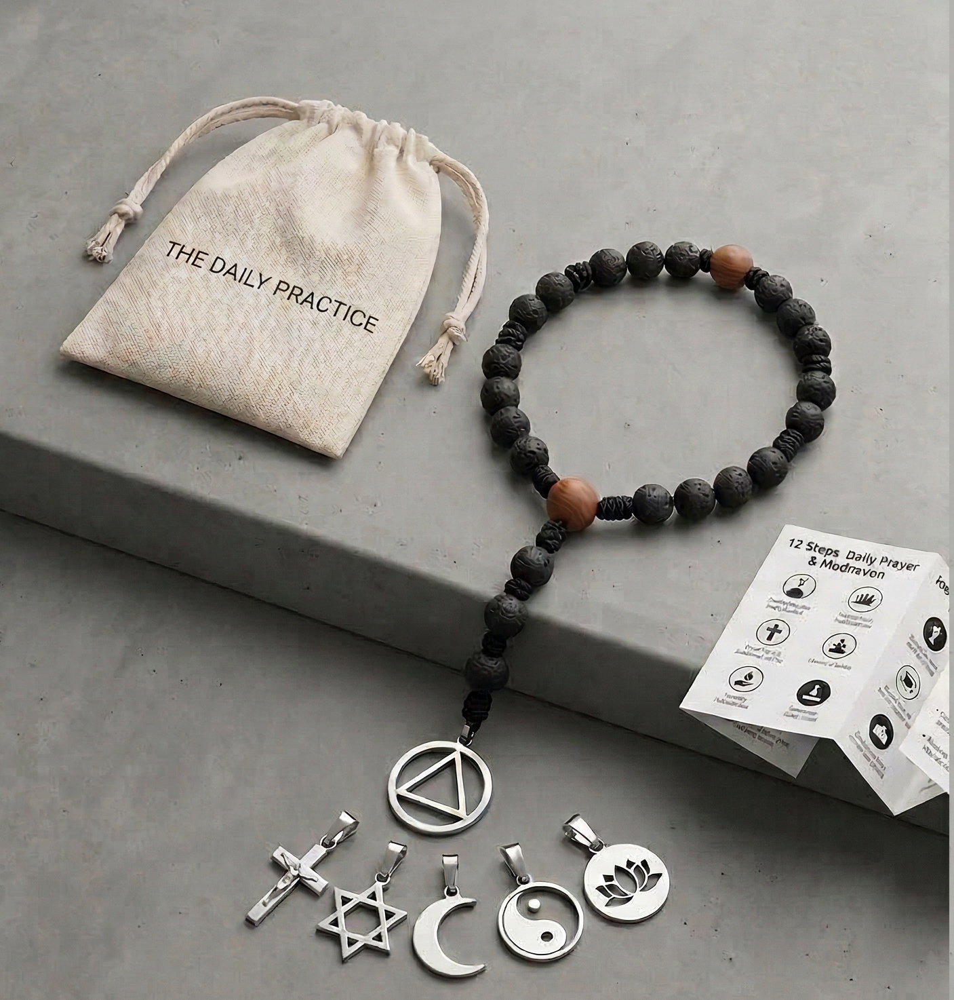

The 12-Step Rosary
A simple, tactile companion for those walking the steps — one bead at a time.

What it is
The 12-Step Rosary brings two quiet traditions together — the steady rhythm of beads in the hand and the daily practice of the Twelve Steps — into a single object you can hold.
It is for anyone working a program of recovery: AA, Al‑Anon, NA, OA, GA, ACA, and others. It does not ask you to be Catholic, or to belong to any particular tradition. It only asks you to slow down, breathe, and let one bead at a time bring you back to the practice.
How it is arranged
- The pendantA symbol of your Higher Power as you understand it — a cross, a Star of David, a crescent moon, the circle and triangle of AA, or any sign that names the source for you. Begin and end here.
- Three beadsSerenity, courage, wisdom — the three qualities asked for in the Serenity Prayer.
- Twelve beadsOne for each of the Twelve Steps of your program. Together, all twelve hold the whole arc of the work.
Two ways to use it
The full round
Move slowly through all twelve beads, naming each step in turn. Pause on the bead. Ask quietly: what is this step asking of me today? Begin and end at the pendant.
The day in three rituals
You can also let the three sets of four beads hold three small rituals — one for morning, one for midday, one for evening. The four beads in a set are not four steps. They are four quiet moments inside one ritual that you build for yourself.
A suggested rhythm
This is one way to use the three sets — drawn from common 12‑step practice. Take what helps and leave the rest.
Morning
- Meditation
- A morning prayer
- The day's intentions or work
- The Serenity Prayer
Midday
- The 3rd Step Prayer
- The Serenity Prayer
- Meditation
- The 7th Step Prayer
Evening
- The Serenity Prayer
- The 11th Step Prayer
- Meditation
- A prayer of gratitude
These are only suggestions. Build the rhythm that fits your own program and your own day. The rosary holds whatever practice you give it.
The Serenity Prayer
Grant me the serenity
to accept the things I cannot change,
courage to change the things I can,
and wisdom to know the difference.
The Twelve Steps
The twelve steps belong to the program you walk. You will know them — one to each bead in the circle. If you would like to read them in their original wording, you can find them in your fellowship's literature, or on the official Alcoholics Anonymous site: aa.org/the-twelve-steps.
The Twelve Steps and the Step Prayers (3rd, 7th, 11th) referred to above belong to the literatures of Alcoholics Anonymous and other Twelve‑Step fellowships and are not reproduced here. They can be found in the published literature of your program.
About
The 12‑Step Rosary is the idea of Fjalar Sigurdarson, drawn from his own years working the steps and from his contemplative tradition. The rosary is meant for anyone who finds that something to hold helps the practice take root.
Each rosary ships in a small cloth pouch together with a cross and the AA symbol, so you can choose which one to wear on your rosary.
Contact & orders
For orders or to share how you are using your rosary, please write to fjalarsig@gmail.com.
Tólf spora talnabandið
Einföld, áþreifanleg fylgd þeirra sem ganga sporin — eina perlu í einu.
Tólf spora talnabandið sameinar tvær kyrrlátar hefðir — taktfastan rytma perlanna í lófanum og daglega iðkun sporanna tólf — í einn hlut sem þú getur haldið á.
Talnabandið er ætlað öllum sem vinna sporin: AA, Al‑Anon, NA, OA, GA, ACA og öðrum. Það biður þig ekki um að vera kaþólskur, né að tilheyra neinni sérstakri hefð. Það biður þig aðeins um að hægja á þér, anda, og leyfa einni perlu í einu að iðka sporin og sinna batanum.
Uppbyggingin
- NistiðTákn fyrir þann æðri mátt sem þú skilur — kross, Davíðsstjarna, hálfmáninn, hringur og þríhyrningur AA, eða hvaða tákn sem nefnir uppsprettuna fyrir þér. Byrjaðu og endaðu hér.
- Þrjár perlurÆðruleysi, kjarkur, vit — eiginleikarnir þrír sem beðið er um í æðruleysisbæninni.
- Tólf perlurEin fyrir hvert hinna tólf spora í þínu prógrammi.
- 3×4 perlurÞrjár stundir úr deginum þar sem þú gefur þér tíma til að setjast niður með æðri mætti. Að morgni, um miðjan dag og að kvöldi. Hver perla getur táknað bæn, hugleiðslu eða kyrrð, allt eftir því sem hentar þér.
Tvær leiðir til að nota það
Heill hringur
Færðu þig hægt í gegnum allar tólf perlurnar og nefndu hvert spor fyrir sig. Staldraðu við perluna. Spurðu í hljóði: hvað biður þetta spor mig um í dag? Byrjaðu og endaðu á nistinu.
Dagurinn í þremur helgistundum
Hvert sett af fjórum perlum táknar tiltekna stund í deginum. Morgunstund, eitt sett um miðjan dag, og eitt sett að kvöldi. Perlurnar fjórar í settinu eru ekki fjögur spor. Þær eru fjögur kyrrlát augnablik innan einnar helgistundar sem þú býrð sjálf/ur til.
Tillaga að takti
Þetta er ein leið til að nota settin þrjú — dregin úr almennri 12 spora iðkun. Taktu það sem hjálpar og slepptu hinu.
Morgunn
- Hugleiðsla
- Morgunbæn
- Verkefni dagsins
- Æðruleysisbænin
Dagur
- 3. spors bænin
- Æðruleysisbænin
- Hugleiðsla
- 7. spors bænin
Kvöld
- Æðruleysisbænin
- 11. spors bænin
- Hugleiðsla
- Þakkarbæn
Þetta eru aðeins tillögur. Búðu til þann takt sem hentar þínu prógrammi og þínum degi. Talnabandið heldur þeirri iðkun sem þú gefur því.
Æðruleysisbænin
Guð, gef mér æðruleysi
til að sætta mig við það sem ég fæ ekki breytt,
kjark til að breyta því sem ég get breytt,
og vit til að greina þar á milli.
Sporin tólf
Sporin tólf færðu úr þínu prógrammi. Ef þú vilt lesa þau í upprunalegri útgáfu AA‑samtakanna finnur þú þau á heimasíðu AA á Íslandi: aa.is.
Sporin tólf og sporabænirnar (3., 7. og 11. spors bæn) sem vísað er til hér að ofan tilheyra útgáfum AA og annarra tólf spora samtaka og eru ekki birtar hér í heild. Þær er að finna í útgefnu efni þíns prógramms.
Um talnabandið
Tólf spora talnabandið er hugmynd Fjalars Sigurðarsonar, sprottin úr hans eigin sporavinnu og íhugunarhefð. Talnabandið er ætlað öllum sem finna að það hjálpar iðkuninni að festast þegar hægt er að halda á einhverju.
Hvert talnaband er sent í litlum taupoka ásamt krossi og AA‑merkinu, eftir því hvað þú kýst að hafa á þínu talnabandi.
Pantanir og hafa samband
Vegna pantana eða til að segja frá því hvernig þú notar þitt talnaband: fjalarsig@gmail.com.